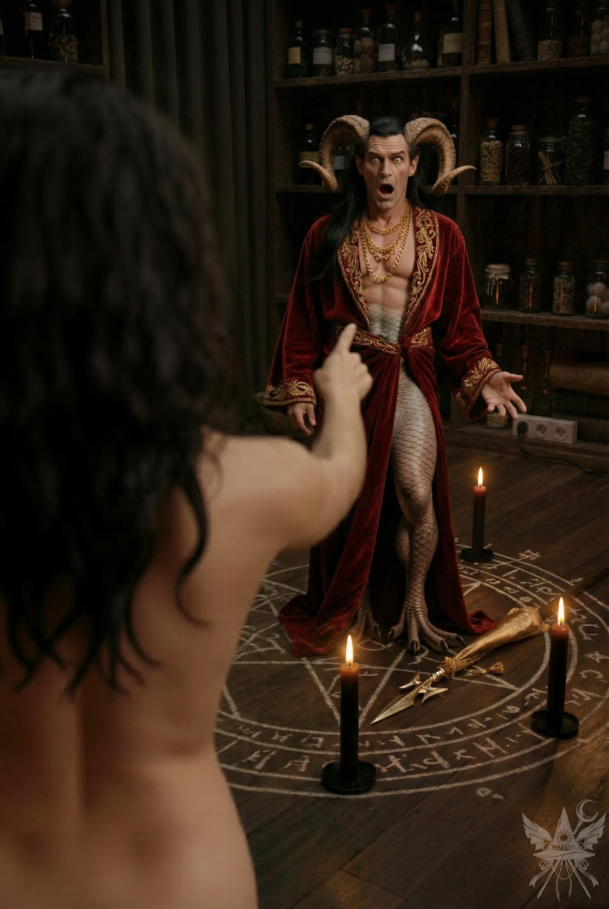
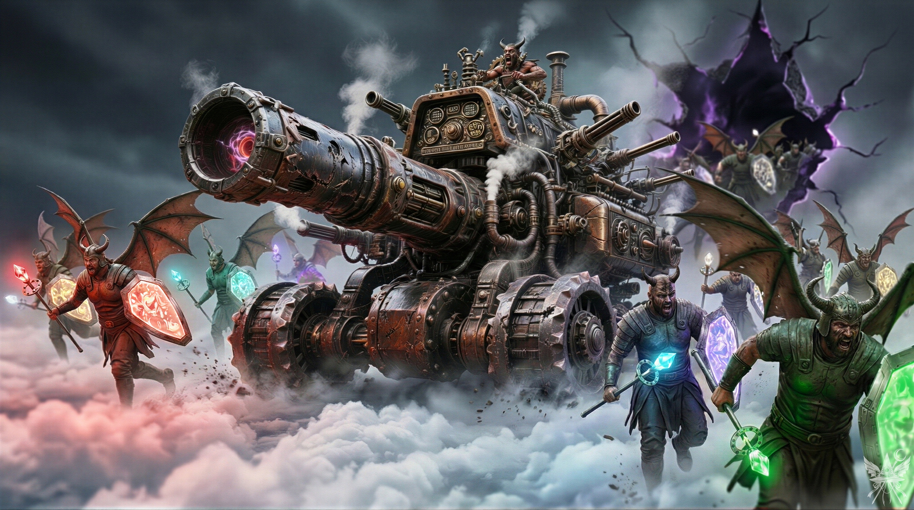
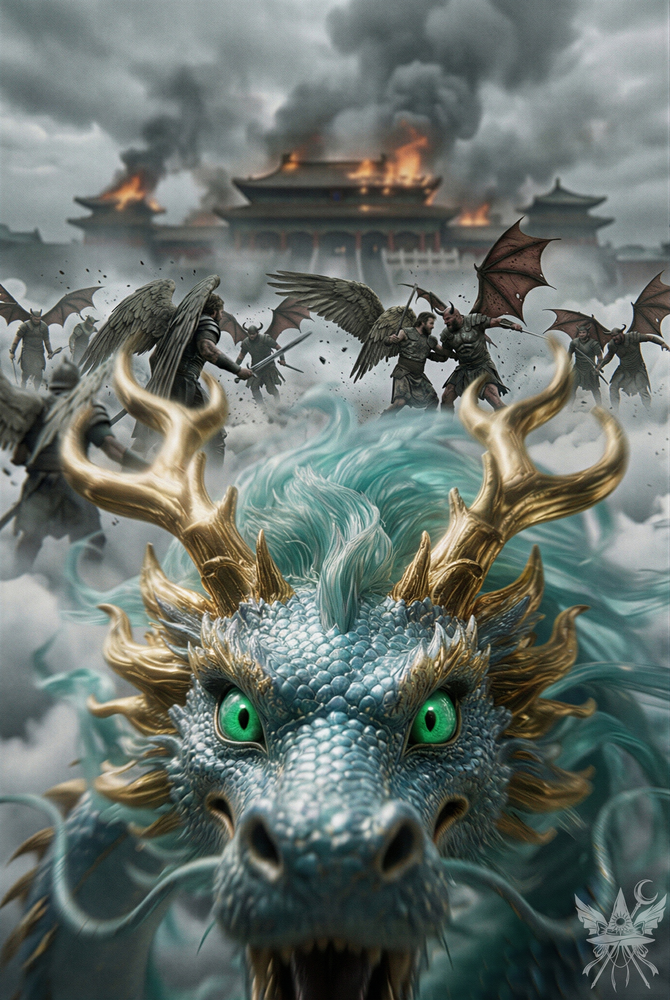
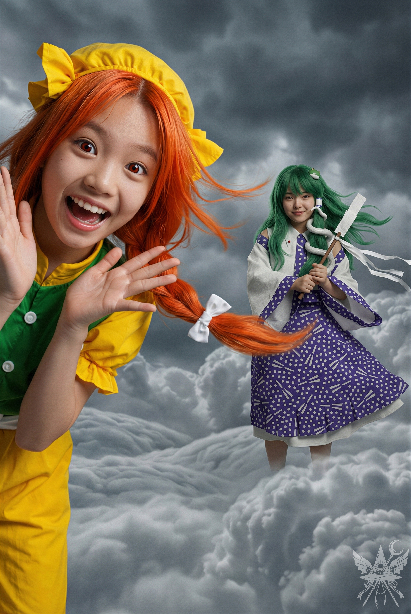
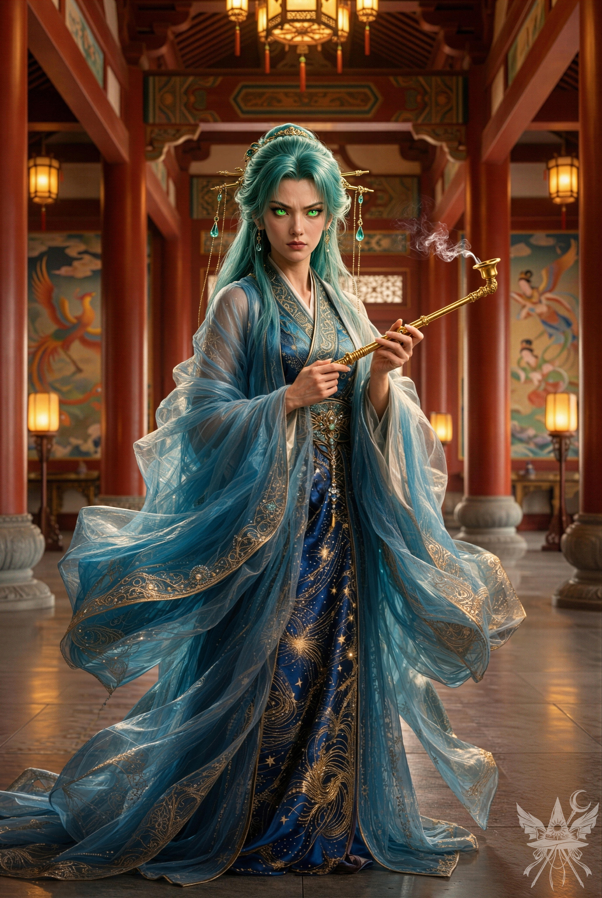
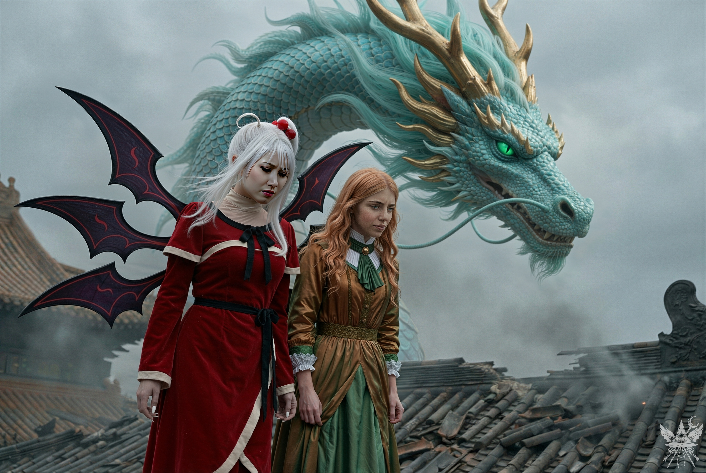

第94章 冷たい風
塗装の剥げた古びた木製の棚の上に、灰色の僧衣が二着、きちんと畳んで置かれていた。地下シェルター特有の、油と埃が入り混じった淀んだ空気が、重く部屋に滞留している。
一着を手に取り、広げる。背後から突き刺さる視線に振り返ると、アンティーク調のオイルランプが落とす薄暗いオレンジ色の光の中で、ソクラテスと、部屋の隅に縮こまる窓付きがじっとこちらを見つめていた。
「ソクラテス。少し外へ出ていてくれないかしら。着替えるから」
静かに告げると、ソクラテスはひげを揺らし、ひどく不満そうに鼻を鳴らした。
「は？ 君たちのことなんて、そんな目で見ているわけないだろニャ。俺は猫だ、ネズミにしか興味はないニャ……」
「少しはレディに敬意を払ったらどうなの」
カナが冷ややかな口調で言い放つ。
ソクラテスはもう一度忌々しげに喉を鳴らすと、尻尾をぴんと立ててドアへ向かい、前足で器用に押し開けた。毛皮の影が廊下へ消えると同時に、カナが音もなく扉を閉める。
「ねえ、あいつ、私たちの計画に気づいているかしら？」
「そうかもしれないわね。あなたが常に何かを企んでいることくらい、あの（猫）なら見抜いているでしょうし」
カナは僧衣に袖を通しながら、脱いだワンピースを器用に畳んで差し出してきた。
「ふふ。メデアでも、ソクラテスの前で着替えるのはさすがに恥ずかしかった？ 猫のくせに、嫌らしい目つきでじろじろ見てきて……」
カナは喉の奥で、小さくくすくすと笑った。
「ううん、平気よ。実は数年前に、好色で有名な悪魔アスモデウスを召喚したことがあるの。何世紀も前から筋金入りの変態で、召喚儀式には裸の処女が必要らしいのだけれど」
僧衣を受け取りながら、記憶の底にある滑稽な出来事を口にする。
「私が召喚してみようと思ったのは、クレタ島に住むニコスという古い友人から、面白い失敗談を聞いたからなの。男装して曰く付きの屋敷に呼ばれた時のことよ。ニコスは若い頃、オカルトに夢中でアスモデウスとの交信を試みていたらしいの。でも、悪魔は『美』を見せないと応じてくれない。そこでニコスは、妹にドレスをプレゼントすると騙して家に呼び寄せ、彼女が着替えている隙に隣の部屋で召喚儀式を始めたのよ」
「……ろくでもない兄ね」
「ええ。でも、ニコスの思惑通りにはいかなかった。理由は二つよ。一つは、妹が悪魔の姿に驚いて逃げ出したこと。もう一つは、ニコスの致命的な勘違いのせいで、そもそも肝心の妹がアスモデウスの要求する『条件』を満たしていなかったこと。激怒したアスモデウスに体臭を悪臭に変える呪いをかけられて、ニコスはそれ以来、女性に一切相手にされなくなったそうよ」
帯を締めながら、呆れたような、それでいてどこか挑発的な笑みが漏れる。
「その話を聞いて、私もアスモデウスを呼び出してみようと思ったの。次の満月の夜、一切の衣服を纏わずに召喚の儀式を行ったわ。弱い人間が、絶対的な力を持つはずの強大な存在を挑発するのって……背筋がゾクゾクするほど痛快でしょ？」

「結局、アスモデウスは私に指一本触れようともしなかった。それどころか、すっかり気圧されて私の要求を何でも聞き入れ、役立つ呪文まで教えてくれたわ。重要なのは、私が媚びて身を売ったわけではないということ。圧倒的な自信と図太さで、悪魔の浅はかな下心を完全にへし折ってやったのよ。……それ以来、誰の前に裸を晒そうが、何も感じなくなったわ」
僧衣の胸元を整え、リュックサックを背負い直す。
「へえ、メデアって本当に肝が据わっているのね。少しは見習わなきゃ。でも、平気ならどうしてわざわざソクラテスを追い出したの？」
「信用できないのよ。けれど、あの（猫）にはまだ利用価値がある。ここで不用意に刺激すれば、厄介なことになるわ」
声を潜め、扉の向こうの気配を窺いながら答える。
カナは目を閉じ、ギリッと歯を食いしばって小さく息を吐き出した。
「……でも、もう我慢の限界よ。堪忍袋の緒が切れて、あのクソ猫の喉笛を掻き切ってしまっても文句は言わないでね。……いっそ、ここで殺しておこうかしら」
「今はまだその必要はないわ。ただ、計画の邪魔になるようなら……その時は対策を考えましょう」
静かに燃えるようなカナの怒りをなだめ、部屋の隅で膝を抱えている小さな背中に視線を向ける。
「窓付き、ここでいい子にして待っていてね」
短く言い残し、重い木製の扉を押し開けて、二人はルイズの事務所を後にした。
重い扉を抜けた外の世界は、荒れ狂う嵐の真っ只中だった。雨を避けて丸まっていたソクラテスが素早く肩へ飛び乗る重みを感じながら、一気に空へと舞い上がる。薄い僧衣だけでは凍えるような冷気が容赦なく肌を刺すため、魔力を飛行のためのジェット噴射だけでなく、膝と肘の小チャクラにも循環させ、どうにか体温を繋ぎ止めた。
カナは吹き荒れる風に顔を向け、遥か彼方を見つめながら意味ありげに呟く。
「ほら……来たわ」
「何が？」
「冷たい風。私たちが正しかったという証よ。すべてを物語っているわ」
背後では、巨大な白亜の有頂天市がみるみるうちに米粒ほどの大きさになり、果てしなく広がる雲海へと沈んでいく。目指す龍神島はまだ視界に入らないが、東の空の彼方には、空間そのものを引き裂くような不気味な赤黒い亀裂が大きく口を開けていた。
「メデア、見て！ 動いているわ！」
カナが叫び、間一髪で避けた巨大な雲の塊を指差した。
目指す龍神島と思われたひときわ黒々とした雲の塊は、確かにうごめいていた。まるで意志を持った巨大な生き物のようにうねり、周囲の大気を暴力的に掻き乱している。重苦しい灰色の雲が空を覆い尽くし、他の雲が我先にと逃げ惑うかのような錯覚さえ覚える。
雲海の頂に君臨する島へ到達するのは、あっという間だった。島の端に降り立つと、上空に開いた亀裂の全貌が明らかになる。幅数十メートル、高さ三メートル。軍隊が悠々と進軍できるほどの、絶望的な大穴だ。
龍宮から少し離れた木立の陰に身を潜め、刻一刻と激化していく戦況を見下ろす。まさに開戦の瞬間だった。
龍宮の壁際を旋回する天使の部隊が、シューニャの檄に応じるように魔界の悪魔たちへ襲いかかっている。

湿った空気の中に、鉄が錆びたような血の匂いと焦げ臭さが充満し、鼓膜を劈くような金属の激突音と怒号が霧の向こうから絶え間なく響いてくる。かつて神聖だった場所は、泥と血に塗れた無残な泥沼へと変貌していた。色とりどりの弾幕が乱れ飛び、撃ち落とされた兵士たちが雨のように地表へ叩きつけられる。生き残った者たちは仲間の亡骸を踏み台にすることも厭わず、狂ったように殺し合いを続けていた。勝敗の行方も、戦う意味も、もはや誰にも分かっていないのだろう。
ポータルからは底なし沼から湧き上がるように魔界の軍勢が次々と溢れ出し、まだ見えざる奥の手を隠し持っている気配が漂っていた。
亀裂がさらに限界まで押し広げられ、空間が歪む。数人の悪魔が、不気味な重低音を響かせる異様な形状の巨大兵器を、ゆっくりと龍宮へ向けて運び出し始めていた。

戦火を避けるように木陰を伝い、じりじりと前進する。ふと、空に小さな黒い点が現れ、一直線に龍宮へと飛来してきた。
（あれが……龍神？）
肩の上のソクラテスが目を細める。
「あれは平和維持軍、死神の特別懲罰部隊だニャ。大量の死者をデータベースが感知して、閻魔どもに報告したらしいニャ。それで出動ってことだニャ」
黒装束の死神たちが鎌を構え、上空を旋回しながら戦場へと降り立つ。拡声器で増幅されたような、耳障りな甲高い声が響き渡った。
「戦闘を中止せよ！ ここは閻魔大審議会の管轄下だ！ 全員、武器を……」
死神の声は途中でぶつりと途切れた。次の瞬間、演説していた死神は呆気なく絶命し、泥の中へ墜落する。降り注ぐ弾幕の雨を避けようと、残された死神たちは慌てて隊列を組み直した。敵味方の区別もつかないまま、死神たちもまた、泥沼のような混沌とした殺し合いへと巻き込まれていく。
数秒後、螺旋状に隊列を組んだ死神たちの中心から、不可視のエネルギーの奔流が放たれた。天使二人と悪魔三人が一瞬にして黒焦げの炭と化す。一瞬だけ戦場に静寂が落ちたが、生き残った兵士たちは畏怖するどころか、我先にと死神たちへ襲いかかった。猛攻をかわしながら応戦するものの、多勢に無勢で、死神たちの防衛線は徐々に押し込まれていく。
凄惨な光景を前に、カナが小さく息を呑む。
「一つ気になるのだけれど……どうして月の姉妹はここまで必死なの？ あの二人は、私とメデアを殺したいだけだったはずよ。私たちって、そんなに重要人物かしら。この島ごと滅ぼすほどの価値があるとでも思っているの？」
「もしかしたら、あいつらの狙いが変わったのかもニャ。姉妹は天界そのものを乗っ取ろうとしているんじゃないかニャ。……おっと、見てみろニャ。本日の主役の登場だニャ」
ソクラテスが前足で遥か上空を指し示す。
燃え盛る龍宮の上に、すべてを覆い隠すほどの巨大な影が落ちた。立ち昇る黒煙をかき分けるように、天を這ってゆっくりと姿を現したのは、途方もない質量を持った巨大な蛇――龍神だった。あの仔龍とは比べ物にならない圧倒的な巨体が、まるで神話の絵巻から這い出してきたかのような暴力を伴って顕現する。
次の瞬間、龍神は龍宮を離れ、島の中心で繰り広げられる戦場の真上へと移動した。
龍神は天使と悪魔の軍勢を数十人まとめてなぎ払い、天高く舞い上がったかと思うと、急降下して戦場に炎の渦を巻き起こした。死神たちは間一髪で難を逃れたが、巻き込まれた兵士たちは悲鳴を上げる間もなく容赦なく灰燼と帰す。生き残った者たちはその圧倒的な力に恐怖し、散り散りに逃げ惑った。再び急降下した龍神だったが、今度は誰の命を奪うこともなく、自らの庭を焼き払う結果となった。
両軍を蹴散らした龍神は、残る死神たちへ狙いを定める。しかしその時、戦場の端から眩い閃光が走り、龍神が苦痛に身を翻した。巨大な体表から黒煙がもうもうと噴き上がる。
「ねえ、見て！」
カナが興奮したように兵器を指差す。
「龍も不死身じゃないみたいね。あの兵器、なかなか良さそう。手に入れたら好き放題できるわよ」
悪魔たちは次弾の装填を終え、再び龍神に照準を合わせる。轟音と共に放たれた光線の衝撃で周囲の塔が何本も砕け散り、龍神の巨体は一瞬にして炎に包まれた。怒り狂った龍神は兵器そのものを焼き尽くそうと猛然と突進するが、間髪入れずに放たれた直撃弾を受け、致命的な深手を負う。
もはやこれまでと悟ったのか、龍神は空中で大きくよろめき、そのまま高度を落として木陰に潜むメデアたちの頭上へと飛んできた。

燃え盛る龍宮から放たれる熱波と焦げた匂いが吹き付ける中、頭上を覆い尽くすほどの巨大な顔が眼前に迫る。発光する鋭い瞳と視線が交錯した瞬間、神話的な恐怖に心臓が大きく跳ねた。だが、その瞳に狂乱の色はない。侵入者であるメデアたちを静かに見極めるような、人知を超えた深い眼差しだった。
龍神は大きく身を翻し、炎上する龍宮の奥へと姿を消した。
最大の障壁が消えたことで勢いづいた悪魔たちは、一斉に宮殿への総攻撃を開始する。しかし、高所から戦況を観測していたシューニャの無機質で正確無比な弾幕が雨のように降り注ぎ、前衛の射手たちが次々と撃ち落とされて形勢は再び逆転した。
態勢を立て直した天使の部隊がポータル周辺の広場へと雪崩れ込み、悪魔たちが迎え撃つ。そこへ、増援の死神たちも続々と集結し始めていた。
「もう……正気の沙汰じゃないわ」
呆れたように呟く。
「龍、私たちに気づいたみたいね」
カナがそう応じると、二人はこの泥沼の殲滅戦に加わる気などとうに失せ、息を潜めたまま成り行きを見守ることにした。
息苦しいほどの血生臭さと熱気が渦巻く戦場のただ中にあって、不意に、そこだけ現実感が抜け落ちたようなエアポケットめいた静けさが降りてきた。
背後から、場違いなほど柔らかな声が届く。
「あら、こんなところに誰かいると思ったら」
振り返る間もなかった。
「メデたん！！」
屈託のない明るい声とともに、首元に凄まじい勢いで何かがしがみついてくる。この直情的で力の加減を知らない抱きつき方は、あの子しかいない。

弾けるような動的なエネルギーの塊となって、オレンジがまるでコアラのようにメデアの首にぶら下がっていた。足元の雲海では、大きなベージュ色の猫がすり寄り、暢気に喉をゴロゴロと鳴らしている。
「どこ行ってたの！？ どうしてこんなところにいるの！？ わたし、この数日すっごく心配したんだから！」
僧衣のフードを深く被ったカナが、ひどく呆れたような冷ややかな視線を送ってくる。ようやく首から離れたオレンジは、不審そうにカナへ目を向けた。
「この人、誰？ メデたんの友達？ ちゆりはどうしたの？ わたし、みんなに忘れられたんじゃないかって、すごく寂しかったんだから！」
弾むようなオレンジの背後から、一歩引いて佇んでいたもう一人の少女が静かに進み出た。戦火の騒音から切り離されたような、儀式的な静謐さを漂わせている。
「はじめまして。オレンジさん、この方たちは……？」
「メデたんなの！ わたしの一番の親友！ すごい魔法使いで、あの化け物を倒して菊界を救った英雄なんだから！ 人間風ステーキが大好きで……とにかくすごいの！」
少女は大きくゆったりとした袖を静かに翻し、優雅に一礼した。
（ひどく動きにくそうな袖だわ……）
「もしかして……あなたが、噂のメデアさんですか？ もう一人の異変解決者の方ですね？」
（異変解決者、ね……）
「そう！ この子はわたしの一番の親友、早苗ちゃん！」
オレンジが布地を引っ張ると、少女は姿勢を正して清らかな声で名乗った。
「守矢神社の巫女、東風谷早苗です。よろしくお願いいたします」
彼女が丁寧に会釈するのに合わせ、メデアも浅く頭を下げる。
「メデアです。こちらこそ」
（不用意に名字や職業を名乗る必要はないわね）
早苗の真っ直ぐな視線が、隣で身をすくめるカナへと向けられる。
「では、こちらの方は……？」
フードで目元を隠したカナは、口元だけをわずかに覗かせ、ひどくおどおどした声色を作り上げた。
「か……カミラと申します……。宗教上の理由で、顔を隠しております……。よ、よろしくお願いいたします……」
ぎこちなく手を合わせ、深く頭を下げるその完璧な怯えっぷりに、内心で舌を巻く。
「カミラさんですね。よろしくお願いいたします」
早苗は少し不思議そうな表情を浮かべたものの、それ以上は追求しなかった。
「堅苦しいご挨拶はこれくらいにして、龍宮へ向かいましょう。龍神様があなたたちをお待ちです」
「周囲はあのような泥沼の戦場ですが、どうやって行くおつもりですか？」
尋ねると、早苗は穏やかな微笑みを崩さずに答えた。
「私についてきてくださいね」
オレンジが元気よく腕を振りながら、早苗よりも先へ駆け出していく。早苗はメデアたちを促し、戦火の上がる龍宮とはあえて反対の方向へと回り込むように案内し始めた。
前を行く二人に聞こえないよう、声を潜める。
「ねえ、カナ。カミラって何よ。宗教上の理由で顔を隠しているなんて、苦しい言い訳じゃない」
「悪かったわね。とっさに思いついた設定なのよ。これで許してちょうだい」
忌々しげに小声で返すカナに呆れつつ、早苗の背中を追う。
オレンジが雲海の斜面を駆け上がり、厚い雲を力任せにかき分けると、そこには不自然なほど丸い木製の扉が隠されていた。一行は次々とその扉の向こうへ滑り込む。
「オレンジ、どうやってこの天界まで来たの？」
扉の向こうに続く、ひんやりとした薄暗いトンネルを歩きながら尋ねる。
「最初はメデたんを探してたの！ 山とか湖とか越えて、あの遺跡までくまなく探したんだから。すごい魔法使いを見なかったかって、みんなに聞きまくったのよ。そしたら妖精さんが話を聞いてくれて。それで、お隣の呪い子を探しに行ったら……なんと、また悪魔に殺されちゃってたの！ 怖いよね！ その後、早苗ちゃんが地獄への行き方を聞きに来たの」
早苗が静かに言葉を引き継いだ。
「ええ、新地獄への行き方を探していたんです。妖精さんからオレンジさんの話を聞いて、風見幽香さんに送っていただくことになりました。なぜかヒマワリの収穫を手伝わされましたけれど……無事に地獄へ着くことができました。その後はもう、本当にすごかったんですよ！ メデアさん、まるで英雄みたいでした！」
（一つの世界を救うために、二つの世界をめちゃくちゃに引っ掻き回したのだけれど。……英雄、ね）
オレンジは暗がりの中でも分かるほど目を輝かせて続ける。
「キクリ様、わたしのこと覚えててくれたんだよ！ 『菊界を救ってくれてありがとう』って、記念バッジまでくれたの！ すごいでしょ？ それから、早苗ちゃんと一緒に晩餐会にも招待されて、もうお腹いっぱい食べ過ぎて破裂しそうだった！」
早苗も嬉しそうに微笑んだ。
「ええ、魔界と天界の神様にもお会いできました。幻想郷以外の同じ神様にお会いするのは初めてで、不思議な繋がりを感じて感動してしまいました」
（同じ神様？ ずいぶん純粋で自信満々な解釈ね）
「……でも、せっかくの晩餐会も、途中で騒ぎになってしまって。招待客の方が、留守中に世界が攻撃されたって報告にいらしたんです。それで、神綺様やキクリ様と、私も龍神様を助けに行くことになりました。霊夢さんや魔理沙さんにこの話をしたら、きっとびっくりするでしょうね！」
「わたしも一緒に来たんだからね！ へへっ」
得意げに笑いながら、オレンジが勢いよく雲のトンネルを抜け出す。
唐代の宮殿を思わせる重厚な建築様式でありながら、一歩足を踏み入れた内部は、外の泥沼のような戦火が嘘であるかのように深い静寂に包まれていた。磨き上げられた石材の床が朱塗りの円柱を鮮明に映し出し、高く吹き抜けた広間には、天井の吊り行灯が厳かな暖色の光を落としている。壁面に描かれた極彩色の鳳凰や天女の舞う姿を横目に、一行は廊下の奥、玉座の間へと通された。
「ようこそ、龍宮へ。状況は？」
玉座の間の入り口でメデアたちを出迎えたのは、見慣れない一人の女性だった。青い中国風のドレスを身に纏い、手にした黄金の煙管から細く白い煙を揺らしている。人間の姿をとってはいるものの、瞬き一つしない発光する緑色の瞳の奥には、圧倒的な威圧感が潜んでいた。肌を刺すような冷たい霊気が彼女の周囲にだけ満ちている。
メデアとカナは咄嗟に深く頭を下げ、早苗が静かに口を開いた。

「外の戦場ですが……どうやら、敵の巨大兵器が攻撃を受けているようです。今なら突破できるかもしれません」
早苗の報告に、オレンジが早くもやる気満々で体を揺らす。
「そうなの！ みんなで一緒に戦ってやっつけちゃおうよ！」
その時、肩に止まっていたソクラテスが不意に飛び降り、ドレスの女性の足元へすり寄ってじっと見上げた。
「あら、お腹が空いているの？ かわいそうに。こんな騒ぎの時に、どうしてここに……？」
女性は窓際のテーブルへ歩み寄ると、精緻な絵柄の美しい花瓶からミルクを小皿に注ぎ、ソクラテスに差し出した。ソクラテスは喉を鳴らして数口舐めとると、身軽に女性の肩へ飛び乗り、一瞬だけその耳元へ顔をうずめるようにした。
その奇妙な光景を眺めていると、見上げるほど巨大な空席の玉座の奥から、二つの影が近づいてきた。圧倒的な存在感を放つ二柱の創造主の足音が、静寂の空間に響く。
「メデア、また会えて嬉しいわ」
静かで憂いを帯びた声色で、神綺が労うように声をかけてきた。
「ええ、本当に。……贈った新しいドレスは、お気に召しませんでしたか？」
キクリが慈愛に満ちた仕草で歩み寄り、優しく抱きしめて額に口づけを落とす。メデアは穏やかな微笑みを作って応じた。
「ドレスは大切にしまってあります。ただ、今日はこの僧衣の方が都合が良かったものですから」
神綺の視線が、フードを深く被って顔を隠しているカナへと向けられる。
「そちらの方は……？」
「弟子のカミラです。極度の人見知りなもので、どうかご容赦ください」
「こ、こんにちは……」
カナは声色まで完全に作り変え、震えるようなか細い声で頭を下げた。
「ところで、こちらの館の主はどちらにいらっしゃるのでしょうか？ 先ほどの戦闘で負傷されたと伺いましたが……ご無事ですか？」
メデアが尋ねると、神綺は静かに微笑み、キクリは口元を押さえて小さくくすくすと笑った。
ソクラテスにミルクを与えていた女性が、艶やかな青緑色の髪を指先で整えながらこちらを振り向く。
「ええ、主なら大丈夫ですよ。少しお疲れのようですが……。何か伝言でもおありですか？」
（何かがおかしいわ……）
違和感を覚えながらも、集めた情報を伝える。
「はい。まず、有頂天市を襲撃し、乗っ取ろうと扇動している天使たちのリーダーですが……比那名居家の長女、天子という仏です」
女性は表情を変えず、黄金の煙管をくゆらせて青白い煙をゆっくりと吐き出した。
「……そう。ますます状況が複雑になってきましたね。それで、他に何か？」
「龍神様の御子息ですが……月の姉妹という悪魔に誘拐されたようです」
その瞬間、女性の無機質だった顔色が一変し、隠しきれない動揺が緑色の瞳に走った。
「……どうして、あなたがそんなことを知っているの？」
直後、耳を劈くような轟音と共に空間が激しく揺れた。廊下の朱塗りの太い柱に無惨な亀裂が走り、大きく傾く。天井の漆喰が剥がれ落ち、息が詰まるほどの白い粉塵が舞い上がった。
「龍神様！ 敵兵器の直接攻撃です！ 至急ご避難を！」
奥から駆け込んできた侍女が悲鳴を上げ、ドレスの女性の足元にすがりつくようにひれ伏した。柱の倒壊はもはや時間の問題だった。
「下がりなさい」
中国風ドレスの女性――いや、龍神は、次の衝撃に備えるように凛として一歩前に出た。焦りと悲痛な色が横顔に滲んでいる。
「この天界は私が守る。……だが、どうすれば……」
（やっぱり。この女が龍神だったのね）
キクリが龍神に歩み寄り、その肩に優しく手を添えた。
「わたくしたちを頼ってください。月の姉妹に好き勝手させるわけにはいきませぬ。今こそ、昔の借りを返す時ですわ」
「衣玖は今頃、夢幻世界の探索をしているでしょう。……無事に戻ってきてくれるといいのだけれど」
龍神が不安げに呟くのを、キクリが力強く励ます。
「ユゲミアも共に戦っております。きっと、何か策を講じてくれるでしょう」
メデアは振り返り、神綺へ問いかけた。
「神綺様。外には魔界の軍勢も押し寄せてきているようですが……今からでも呼び戻すことはできないのですか？」
神綺は酷く疲労した様子で、諦めたように首を振った。
「無理ね。もう私の命令は誰にも届かないわ。まるで、何者かに完全に操られているみたい」
早苗が凛とした表情で口を挟む。
「軍勢を操っている大元があるのなら、それを叩くしかないのではないでしょうか……？」
「道具なんかじゃないわ。幻月よ。あの姉妹の、姉の方」
メデアが訂正すると、オレンジがその場で小躍りして見せた。
「やったー！ だったら、そいつをやっつけちゃえばいいんだ！」
再び、骨の髄まで響くような激しい衝撃が空間を揺らした。隣の廊下の天井が凄まじい音を立てて崩落し、ぽっかりと空いた大穴から、嵐が吹き荒れる鈍色の空が覗く。
龍神は瓦礫の山をものともせずに駆け上がり、大穴から侵入を試みようとした悪魔の小隊を、一瞬にして青白い炎で焼き尽くした。
創造主たちが防衛に気を取られている隙に、カナがメデアの耳元へ顔を寄せ、声を潜めて責め立ててきた。
「ちょっと、なんで月の姉妹の話なんてしたのよ！ これじゃ、龍神は息子のことで頭がいっぱいになってしまうじゃない。どうするの……閻魔の命令で風太が誘拐されて、彼岸に連れて行かれたことにでもする？」
逆側の肩に乗ったソクラテスも、忌々しげに耳打ちする。
「そうだニャ、メデア。平和維持軍がここに集結しているってことは、彼岸への直通ポータルはこの近くにあるに違いないニャ。とにかく、急いで偽の贈与契約書を龍神に見せるんだニャ。閻魔を敵に回させる絶好のチャンスだニャ。……ついでに、厄介な問題もまとめて片付けてくれるかもしれないニャ」
鼓膜を破るほどの爆発音が立て続けに響き、メデアたちの密談は強制的に中断された。崩落した大穴から顔を上げると、すでに龍の姿へと戻った龍神が、灰色の瓦が敷き詰められた龍宮の屋根の上へと這い出ているのが見えた。
急いで瓦礫をよじ登り、屋根の上へと出る。肌にまとわりつくような湿った風と、戦場の熱気が入り混じった重苦しい空気が全身を叩きつけた。

巨大な青緑色の龍神を背後に控え、神綺とキクリが眼下の惨状を憂いを帯びた瞳で見下ろしている。地上では天使、悪魔、そして死神が三つ巴となって入り乱れ、戦況は完全に泥沼の膠着状態に陥っていた。
（動くなら、今しかない……！）
神綺は悲しげに目を伏せ、諦めたように戦況を見つめていた。
「もう駄目ね。私の民は、自力で何とか生き延びてもらうしかないわ。キクリ、あなたはどうするつもり？」
キクリが酷く心配そうに眉を寄せる。
「まさか、眼下の者たちを皆殺しにするというのですか？ 天使たちは味方ではないのでしょうか……。龍神様、いかがお考えですか？」
圧倒的な質量の龍神から、雷鳴のような地響きを伴う声が発せられ、足元の瓦屋根が微かに震えた。
「わからん」
息詰まるような神々の沈黙を破り、オレンジが唐突に声を張り上げた。
「ねえ、メデたん！ わたし、すごくいいこと思いついた！ わたしがみんなを惹きつけてる間に、メデたんがあの兵器を奪っちゃおうよ！ それで、あいつらまとめてお仕置きしてやるの！ 前にやったみたいにね、覚えてるでしょ？ わたしたちをなめちゃ駄目なんだから！」
その無謀な提案に、キクリが慌ててメデアたちを押し留めようとする。
「早苗殿、オレンジ殿、それにメデア殿！ あなた方はこれ以上巻き込まれてはなりませぬ。我々が事態を収拾するまで、どうか龍宮の中へ下がっていてください！」